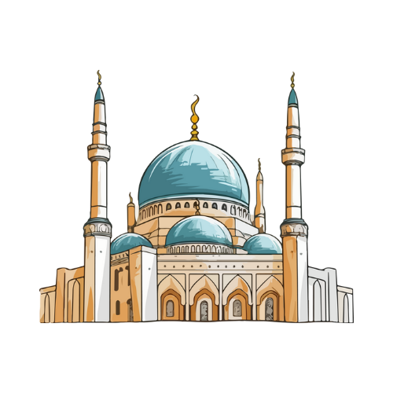

Hadits-Hadits tentang Puasa
أحاديث الصيام
الصِّيَامُ جُنَّةٌ، فَإِذَا كَانَ يَوْمُ صَوْمِ أَحَدِكُمْ فَلَا يَرْفُثْ وَلَا يَصْخَبْ، فَإِنْ سَابَّهُ أَحَدٌ أَوْ قَاتَلَهُ فَلْيَقُلْ إِنِّي امْرُؤٌ صَائِمٌ
'Puasa adalah perisai. Jika salah seorang dari kalian sedang berpuasa, janganlah berkata kotor dan berteriak-teriak. Jika ada orang yang mencaci atau memusuhinya, hendaklah ia mengatakan, 'Aku sedang berpuasa.'
HR. Bukhari & Muslim
كُلُّ عَمَلِ ابْنِ آدَمَ يُضَاعَفُ الْحَسَنَةُ عَشْرُ أَمْثَالِهَا إِلَى سَبْعِمِائَةِ ضِعْفٍ قَالَ اللَّهُ عَزَّ وَجَلَّ إِلَّا الصَّوْمَ فَإِنَّهُ لِي وَأَنَا أَجْزِي بِهِ
Setiap amalan anak Adam dilipatgandakan pahalanya; satu kebaikan dibalas sepuluh kali lipat hingga tujuh ratus kali lipat. Allah 'Azza wa Jalla berfirman: 'Kecuali puasa, karena puasa itu untuk-Ku dan Aku yang akan membalasnya.'
HR. Muslim
مَنْ صَامَ يَوْمًا فِي سَبِيلِ اللَّهِ بَعَّدَ اللَّهُ وَجْهَهُ عَنِ النَّارِ سَبْعِينَ خَرِيفًا
Barangsiapa berpuasa satu hari di jalan Allah, maka Allah akan menjauhkan wajahnya dari neraka sejauh tujuh puluh tahun perjalanan.
HR. Bukhari & Muslim
Hadits-Hadits tentang Memaafkan
أحاديث العفو
مَا نَقَصَتْ صَدَقَةٌ مِنْ مَالٍ، وَمَا زَادَ اللَّهُ عَبْدًا بِعَفْوٍ إِلَّا عِزًّا
Sedekah tidak akan mengurangi harta, dan tidaklah Allah menambahkan kepada seorang hamba sifat pemaaf kecuali kemuliaan.
HR. Muslim
وَأَنْ تَعْفُوا أَقْرَبُ لِلتَّقْوَى وَلَا تَنْسَوُا الْفَضْلَ بَيْنَكُمْ
Dan memaafkan itu lebih dekat kepada takwa. Dan janganlah kamu melupakan keutamaan di antara kamu.
QS. Al-Baqarah: 237
مَنْ كَظَمَ غَيْظًا وَهُوَ قَادِرٌ عَلَى أَنْ يُنْفِذَهُ، دَعَاهُ اللَّهُ عَلَى رُءُوسِ الْخَلَائِقِ يَوْمَ الْقِيَامَةِ حَتَّى يُخَيِّرَهُ مِنَ الْحُورِ الْعِينِ مَا شَاءَ
Barangsiapa menahan amarah padahal ia mampu meluapkannya, maka Allah akan memanggilnya di hadapan seluruh makhluk pada Hari Kiamat hingga memilihkan bidadari surga yang ia kehendaki.
HR. Abu Daud & Tirmidzi
Tentang Website Ini
Website ini dibuat oleh seorang pelajar smp dari Semarang dan menjadikan website ini sebagai media untuk mempelajari dan mengingat hadits-hadits Nabi Muhammad ﷺ tentang puasa dan keutamaan memaafkan.
Semoga dengan membaca hadits-hadits ini, kita dapat mengamalkannya dalam kehidupan sehari-hari dan meraih ridha Allah Subhanahu wa Ta'ala.
Barangsiapa menunjukkan kepada kebaikan, maka baginya pahala seperti pahala orang yang mengerjakannya
HR. Muslim
